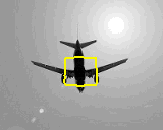

|  |
|
Summary | Publications | Code
Research Summary
A general purpose segmentation procedure is proposed, which uses geometric active contour for object boundary detection. Active contours have gained popularity for image segmentation due to their ability to elastically deform and delineate object boundaries with sub-pixel accuracy. Furthermore, the energy minimization framework, which serves as the basic platform for most active contour based techniques, can be manipulated easily to introduce additional constraints based on shape, appearance etc. to assist segmentation. Geometric active contours are favored when the application requires the propagating curves to be able to adapt to the varying topology of the underlying object by automated splitting or merging.Many imaging techniques such as light microscopy, ultrasound etc.prduces noisy data, and in such cases edge based techniques for segmentation is less reliable. The pioneering work of Mumford-Shah, which was later popularised by Chan and Vese utilizes region based information (as opposed to edge information) to perform segmentation. Such techniques are popularly refered to as "region based active contour". The Chan-Vese framework models the image as a set of constant illumination regions and performs a two-class segmentation by computing the optimal partition which satisfies the constant illumination constraint. The constant illumination assumption is challenged in applications where the signal intensity is inhomogeneous. encountered frequently in many medical and biological imaging applications like magnetic resonance (MR) imaging, ultrasound, X-ray, confocal and electron microscopy, etc. Current solutions use some form of local processing to tackle intra-region inhomogeneity, which makes such methods susceptible to local minima. We propose a solution which generalizes the traditional Chan-Vese algorithm. In contrast to existing local techniques, we represent the illumination of the regions of interest in a lower dimensional subspace using a set of pre-specified basis functions. This representation enables us to accommodate heterogeneous objects, even in presence of noise. The local intensities are modelled by Legendre polynomials and level sets are used to perform segmentation, hence the name Legendre Level Set (L2S).
 |
 |
| L2S | Chan-Vese |
- L2S performs segmentation in presence of inhomogeneous intensity.
- Computationally efficient.
- Curve evolution and region approximation modelled in a single mathematical framework.
- Excellent performance on a dataset of noisy ultrasound images.
- Excellent segmentation results on 2D projection of confocal microscopy images of Drosophila neurons.
Publications [Top]
- S. Mukherjee and S.T. Acton, "Region Based Segmentation in Presence of Intensity Inhomogeneity Using Legendre Polynomials," IEEE Signal Processing Letters, vol.22, no.3, pp.298,302, March 2015. [paper]
Code [Top]
My implementation of L2S in Matlab can be downloaded here. The zipped folder contains the files for running L2S. If you are using the code, please cite our paper [1].CREASEG plugin
I have also implemented L2S as a plugin for the CREASEG package, which is a level set segmentation toolkit. Our algorithm is implemented as Algorithm 7. My implementation as a creaseg plugin can be downloaded from here. This folder also contains a set of images, which we have used for our paper.I have found CREASEG to be particularly useful for comparing the performance of my method against the relevant region based active contour segmentation algorithms. If you are using this toolkit, in addition to citing [1], you should follow the CREASEG developer's instruction for citing the relevant papers and copyright issues. Please bear in mind that I am not the developer of this toolkit; I have just implemented my algorithm as a plugin for CREASEG.